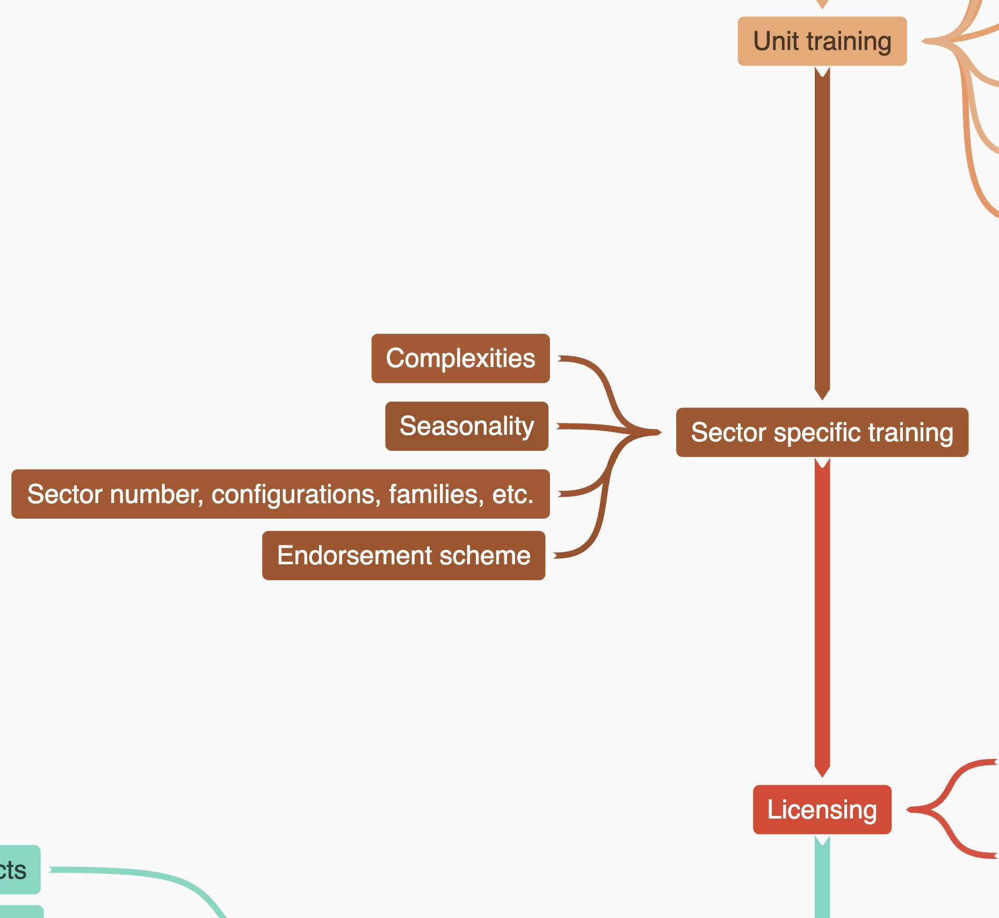
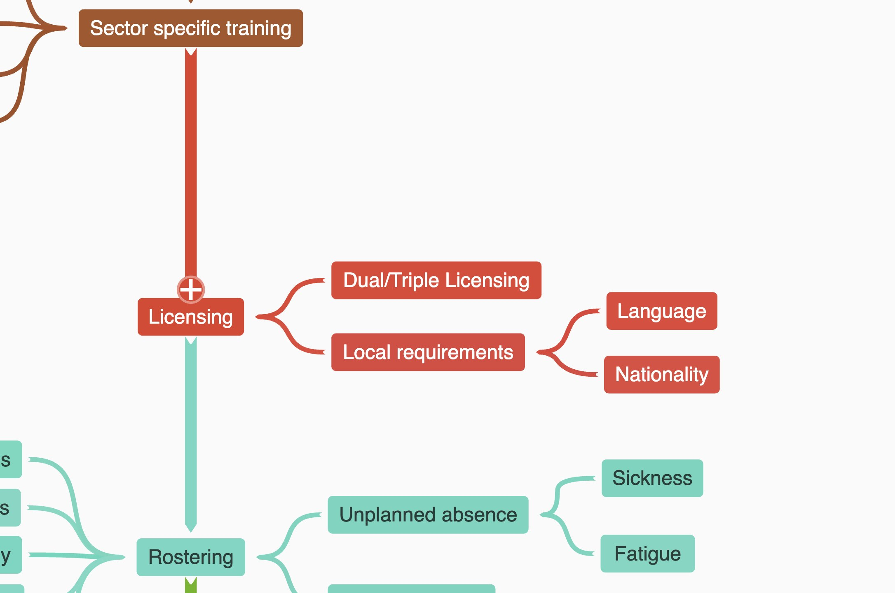

Sector qualifications and licensing
Sector qualifications and licensing determine where controllers can work and how flexibly they can be deployed. Training, endorsement and currency requirements need to be considered together.
Sector training and endorsement

Sector training is closely linked to endorsement schemes. Smaller ACCs may train and endorse controllers for all sectors; larger centres commonly use sector families or clusters. Local regulation or collective agreements can also constrain the number of endorsements a controller may hold.
Decisions made when designing the endorsement scheme may have far-reaching implications and feature several trade-offs. While increasing the number of sector endorsements an ATCO may/should hold increases flexibility in controller allocation, it also lengthens sector-specific training. Counterintuitively, it may also introduce constraints into the rostering scheme, as European regulation requires ATCOs to spend certain operational hours in each sector for which they hold an endorsement to keep their endorsements valid.
Cross-border operations, ATS delegation, and dynamic sectorisation concepts further increase the focus on sector-specific training and endorsement schemes. Depending on the scale of such initiatives, current sector-specific training and endorsement practices may not be efficient.
There are also some key parameters which need to be considered by ANSPs when designing sector-specific training and sector endorsement schemes.
Complexity
The level of traffic complexity in the sectors of an ATS unit will have a major impact on the training process. The more complex the traffic patterns and situations are, the more time and effort students will require, as complexity is strongly related to ATCO workload.
However, there is currently no widely accepted, robust methodology for measuring or calculating traffic complexity within a block of airspace, leaving training supervisors and instructors to rely on their personal experience and expert judgment. Some ANSPs introduce measurement models and algorithms to monitor complexity during live operations, but their use in training is uncommon.
Complexity-based training and endorsement schemes may be a solution for moving away from today's geographically defined endorsement practices. However, this requires a robust traffic complexity indicator which can be measured in live operations and also calculated in exercises and simulations.
Seasonality
Seasonality has a profound impact on ANS operations, not only affecting manpower planning but also ATCO training in many ways. For some ANSPs, the difference between summer and winter traffic levels is so dramatic that ATCOs are required to go through a peak summer period during their OJT phase before they can acquire a licence. This means that, under certain circumstances, the training of an ATCO may be prolonged by almost a year (for example, in Croatia).
Even if seasonality is not dramatic, capacity-constrained ATS units may need to suspend training activities during peak summer periods, as they must redirect all licensed ATCO staff to operational duties to cope with traffic demand. This may limit training capacity even if, on average, the unit has a sufficient number of ATCOs and instructors.
Sector configurations, sector-families, clusters
ATS units divide their area of responsibility into elementary sectors defined by geographical and vertical boundaries. Airspace design and ATM-system capabilities determine how flexibly sectors can be combined or split.
Sector configurations define which elementary sectors are open and which are combined. ANSPs use different numbers of configurations, and some use configurations to work around limits in ATM-system flexibility.
Sector families support training and endorsement but can introduce geographical fragmentation within larger ATS units.
Licensing and endorsement

Licensing and endorsement mark a critical juncture in the ATCO lifecycle, where training outcomes translate into operational deployment rights. At this point, individual competence becomes formally recognised and bound by specific operational conditions. Traditionally, endorsement schemes in Europe have been closely linked to defined sectors or sector groups, reflecting relatively stable airspace structures and local operating practices. As operational environments become more dynamic, these models are increasingly challenged by the need for flexibility across sector configurations and, in some cases, across organisational or national boundaries.
Within the European regulatory framework, ATCO licensing is governed by harmonised rules that already provide a common baseline. EASA defines the core requirements for ATCO licensing and training through Commission Regulation (EU) 2015/340 (Part-ATCO). This regulation establishes a single European licence format and common minimum standards for training, assessment and competence. It also enables mutual recognition of licences between Member States, provided that the applicable requirements are met.
However, while the licence itself is harmonised, endorsements and unit-specific validations remain largely local. States, through their Civil Aviation Administrations, retain responsibility for approving training organisations, defining local operational requirements, setting language proficiency conditions and overseeing unit endorsements. As a result, cross-recognition of operational privileges depends not only on ANSP practices, but also on how flexibly and consistently national authorities interpret and apply the regulatory framework. This makes endorsement and validation practices a key lever for enabling or constraining operational flexibility.
This challenge has been examined in several SESAR-supported activities. The IFAV3 project (Increased Flexibility of ATCO Validations – V3) explored how validation and endorsement practices could evolve toward more competency-based approaches, focusing on demonstrated capability rather than strict attachment to fixed sector geometries. While IFAV3 does not propose changes to the licensing framework itself, it indicates that greater flexibility can be achieved within existing regulations when supported by appropriate oversight.
From a broader professional perspective, the International Federation of Air Traffic Controllers' Associations has also addressed the issue of licence portability and cross-recognition. IFATCA policy papers highlight that future ATM concepts will increasingly require controllers to operate in environments where traditional geographic assumptions no longer apply, and that endorsement and validation schemes must evolve accordingly, while maintaining safety and regulatory accountability.
In this context, the role of States and Civil Aviation Administrations becomes particularly important. While European regulation provides the framework for harmonisation, progress toward more flexible and portable endorsement schemes largely depends on national authorities' willingness to adapt oversight practices, support cross-border cooperation, and accept new validation concepts that demonstrate safety. This requires a proactive, enabling regulatory approach, in which authorities actively drive change rather than merely approving established practices.
Language requirements and local operational rules will continue to form necessary boundary conditions, especially in complex or high-density environments. However, SESAR interoperability studies indicate that excessive localisation of endorsement requirements can significantly limit flexibility and increase training and validation overhead in cooperative or cross-border operations.
Taken together, these publications show that cross-recognition of ATCO licences already exists at the regulatory level, but that endorsement and validation practices remain the main limiting factor for operational flexibility. Enabling dynamic and cross-border airspace operations, therefore, depends not only on ANSP initiatives but also on States and Civil Aviation Administrations providing the regulatory flexibility and leadership needed to support new endorsement concepts. When national authorities actively facilitate alignment and mutual trust, endorsement schemes can evolve to support better adaptability, resilience and performance within the existing European licensing framework.
Sector qualifications and licensing measures
Sector-Specific Training encompasses the activities through which controllers acquire, maintain and expand the endorsements required to operate within specific sectors, sector groups or operational positions (sector-specific training is part of Unit Training, but due to its importance and its connection with endorsement, it is recognised separately here). While the more general parts of Unit Training enable a controller to become operational within a given environment, Sector-Specific Training determines the extent to which that controller can subsequently be deployed across different parts of the operation. As such, it plays an important role in workforce flexibility, operational resilience and the efficient utilisation of qualified personnel.
Sector-Specific Training received High Incidence and Medium Severity classifications. Endorsement structures and training flexibility were recurring concerns for workforce deployment and adaptability.
The consultation process revealed broad agreement among ANSPs regarding the importance of maintaining sufficient operational flexibility to respond to changing traffic patterns and staffing needs. Stakeholders consistently highlighted the value of enabling controllers to operate across multiple sectors and reducing unnecessary barriers to deployment.
However, important differences emerged regarding the way endorsements are structured, maintained and managed. ANSPs reported varying approaches to sector grouping, endorsement limitations, currency requirements and training arrangements, reflecting differences in operational complexity, national frameworks and organisational practices. As a result, the ability to deploy controllers flexibly varies significantly across the network.
The challenges identified within Sector-Specific Training are primarily associated with the rules governing endorsements and the maintenance of operational competence. In many cases, stakeholders reported that the limitations affecting workforce flexibility arise not from the availability of qualified controllers, but from the conditions under which endorsements can be obtained, maintained or utilised.
Challenges reported in Sector Specific Training (Source: Consortium assessment)
| ID | Challenge | Rationale | ANSPs reporting |
|---|---|---|---|
| TL-ST.1 | Restrictive endorsement currency requirements | Rigid currency requirements may make it difficult for controllers to maintain multiple endorsements simultaneously, reducing operational flexibility and limiting deployment options. | 4 (24%) |
| TL-ST.2 | Limits on the number of endorsements held by individual controllers | Restrictions on the number of sectors or positions for which a controller may be endorsed can constrain workforce flexibility and reduce the ability of ANSPs to deploy available resources where they are most needed. | 3 (18%) |
| TL-ST.3 | Training-resource implications of endorsement structures | Certain endorsement arrangements may require additional instructors, supervisors and validation activities, increasing the training resources required to support workforce flexibility. | 3 (18%) |
| TL-ST.4 | Operational deployment constraints arising from employment arrangements | Collective agreements or employment arrangements may limit the operational deployment of qualified controllers, reducing workforce flexibility even where the necessary competencies are available. | 3 (18%) |
| TL-ST.5 | Disproportionate retraining requirements following endorsement expiry | Expired endorsements may trigger extensive retraining requirements regardless of the reason for, or duration of, the lapse, resulting in training effort that may not be proportionate to the underlying loss of competency. | 2 (12%) |
The challenges identified within Sector-Specific Training are primarily associated with workforce flexibility rather than workforce production. Unlike Initial Training or Unit Training, where the principal objective is to increase the number of qualified controllers, the challenges identified here concern the ability to make efficient use of controllers who are already operational.
The most frequently reported concerns relate to endorsement maintenance and deployment flexibility. Stakeholders repeatedly highlighted the difficulties associated with maintaining multiple endorsements under restrictive currency requirements and endorsement limitations. In several cases, ANSPs reported situations in which qualified controllers could not easily be deployed to areas experiencing staffing pressures despite possessing many of the competencies required to perform the role.
The consultation also revealed that endorsement structures may create additional demands on training resources. Requirements related to endorsement maintenance, retraining and supervision can increase the workload imposed on instructors and assessors while simultaneously reducing operational flexibility. As a result, some stakeholders argued that the current frameworks governing endorsements do not always achieve the optimal balance between competence assurance and workforce utilisation.
Taken together, these findings suggest that Sector-Specific Training plays an important role in determining how effectively existing workforce capacity can be translated into operational capacity. Although it does not directly influence the production of new controllers, it strongly affects the deployment and utilisation of those already available.
The identified solutions focus on increasing workforce flexibility by simplifying endorsement arrangements, improving the portability of competencies and reducing unnecessary training requirements. Most measures seek to improve the utilisation of qualified controllers by enabling a broader range of operational deployment options.
Main solutions for Sector Specific Training (Source: Consortium assessment)
| ID | Solution | Challenges addressed | Time horizon | Control over the solution | Model variables affected |
|---|---|---|---|---|---|
| TL-ST.BP.1 | Consolidate sectors into broader endorsement groupings | TL-ST.1 TL-ST.2 TL-ST.3 | Short | Internal | Utilisation |
| TL-ST.BP.2 | Develop multi-unit qualification schemes | TL-ST.2 TL-ST.4 | Medium | Internal | Utilisation |
| TL-ST.BP.3 | Introduce progressive operational qualification pathways | TL-ST.1 TL-ST.2 | Medium | Internal + External | Training duration |
| TL-ST.BP.4 | Redirect trainees towards alternative operational environments where appropriate | N/A | Medium | Internal | Success rate |
| TL-ST.FP.1 | Promote greater standardisation of operational interfaces and working positions | TL-ST.2 TL-ST.5 | Long | Internal + External | Training duration |
The identified solutions seek to improve workforce flexibility by enabling controllers to acquire, maintain and utilise endorsements more efficiently. Accordingly, most measures influence Utilisation, while a smaller number affect Training duration and Success Rate by reducing unnecessary constraints within the endorsement process.
Several best practices focus on simplifying endorsement arrangements and reducing the fragmentation of operational qualifications. Broader endorsement groupings, multi-unit qualification schemes and progressive qualification pathways all seek to increase deployment flexibility while maintaining appropriate competency standards. These measures directly address the challenges associated with restrictive currency requirements and limitations on the number of endorsements that controllers may hold.
A second group of measures seeks to improve the efficiency of endorsement and retraining processes. Redirecting trainees towards alternative operational environments where appropriate helps preserve training investment and avoid avoidable losses from the training process. Similarly, reducing the distinction between operational environments through greater standardisation can shorten training periods and facilitate workforce mobility.
The future practices build on these principles by promoting greater harmonisation across operational environments. Standardised operational interfaces and working positions have the potential to reduce retraining requirements, improve transferability of competencies and increase the flexibility with which controllers can be deployed across sectors or units.
Taken together, the identified solutions demonstrate that improvements in Sector-Specific Training are less concerned with increasing the overall number of controllers and more concerned with increasing the operational value that can be derived from the existing workforce. As workforce shortages place increasing pressure on operational capacity, measures that improve flexibility and utilisation may provide an important complement to initiatives focused on workforce growth.
Licensing encompasses the processes governing the issue, maintenance, recognition and transferability of ATCO licences, ratings and endorsements. While training determines the competencies acquired by controllers, the licensing framework establishes the conditions under which those competencies can be exercised and recognised. As such, Licensing plays an important role in determining workforce flexibility, mobility and the ability of ANSPs to make efficient use of qualified personnel across different operational environments.
Licensing received High Incidence and Medium Severity classifications. Its influence was particularly important for workforce flexibility and mobility, while Unit Training remained the more immediate production bottleneck.
The consultation process revealed broad agreement among ANSPs regarding the benefits of greater harmonisation and workforce mobility. Stakeholders consistently recognised the value of a licensing framework capable of facilitating the movement of qualified personnel while maintaining appropriate competency and safety standards.
However, significant differences emerged regarding the practical effectiveness of the current framework. While some ANSPs highlighted positive experiences with licence recognition and international recruitment, others reported that language requirements, endorsement structures, national implementation differences and administrative processes continue to limit workforce mobility in practice. As a result, stakeholders frequently distinguished between the existence of a common European licensing framework and its practical ability to support operational flexibility across the network.
The challenges identified within Licensing primarily concern the ability of the current framework to support workforce mobility, operational flexibility and proportionate regulatory oversight. While stakeholders generally support the objectives of a common European licensing system, many questioned the extent to which those objectives are fully realised in practice.
Challenges reported in Licensing (Source: Consortium assessment)
| ID | Challenge | Rationale | ANSPs reporting |
|---|---|---|---|
| TL-L.1 | Barriers to cross-border workforce mobility | Language requirements, and in some cases nationality-related provisions, may limit the ability of controllers to work across borders despite holding a common European licence, reducing workforce flexibility and mobility. | 12 (71%) |
| TL-L.2 | Disproportionate administrative requirements | Training and licensing processes may generate administrative obligations that stakeholders consider disproportionate to the activities being undertaken, increasing workload without necessarily improving outcomes. | 4 (24%) |
| TL-L.3 | Limited practical effectiveness of the European licensing framework | Although a common European licensing framework exists, stakeholders frequently reported that it does not always translate into meaningful workforce mobility or operational flexibility in practice. | 4 (24%) |
| TL-L.4 | Assessment requirements not always aligned with operational complexity | Certain assessment and validation criteria may be calibrated towards more complex operational environments, creating difficulties for ANSPs operating in less complex contexts without necessarily reflecting differences in operational competence. | 2 (12%) |
| TL-L.5 | Lengthy licence transfer processes | Administrative procedures associated with licence transfers between Member States may create delays that reduce the responsiveness of workforce mobility arrangements. | 2 (12%) |
The challenges identified within Licensing are primarily associated with workforce flexibility and mobility rather than workforce production. Unlike Recruitment, Selection or Training, where the focus is on increasing the number of qualified controllers, the challenges identified here concern the ability to make efficient use of controllers who are already qualified.
The most frequently reported challenge relates to cross-border mobility. Stakeholders consistently highlighted that language requirements, endorsement arrangements and national implementation differences continue to restrict the movement of controllers despite the existence of a common European licensing framework. As a result, workforce shortages and surpluses often remain localised rather than being mitigated through greater mobility of qualified personnel.
The consultation also identified concerns regarding proportionality and administrative burden. Several ANSPs questioned whether existing licensing processes always reflect operational realities and highlighted the administrative effort associated with documentation, approvals and licence transfers. Although these issues were generally reported less frequently than mobility-related challenges, they contribute to the perception that the framework could operate more efficiently.
Taken together, the findings suggest that the principal licensing-related challenge is not the existence of common rules, but the extent to which those rules translate into practical operational flexibility. Consequently, stakeholders generally view Licensing as an enabler of workforce efficiency rather than a direct determinant of workforce numbers.
The identified solutions focus on improving workforce mobility, increasing flexibility within the licensing framework and reducing unnecessary administrative burdens. Most measures seek to improve the utilisation of qualified personnel by facilitating the recognition and transfer of competencies across operational environments.
Main solutions for Licensing (Source: Consortium assessment)
| ID | Solution | Challenges addressed | Time horizon | Control over the solution | Model variables affected |
|---|---|---|---|---|---|
| TL-L.BP.1 | Promote proportionate licensing requirements for experienced personnel | TL-L.2 TL-L.4 | Medium | Internal + External | Training duration Training capacity |
| TL-L.BP.2 | Facilitate mobility through common operational language arrangements and digital licence management | TL-L.1 TL-L.3 TL-L.5 | Long | Internal + External | Intake Utilisation |
| TL-L.BP.3 | Promote greater consistency in retirement-related regulatory provisions | N/A | Long | Internal + External | Retirements |
| TL-L.BP.4 | Use third-country licensing mechanisms as targeted workforce support measures | TL-L.3 | Medium | Internal | Intake |
| TL-L.FP.1 | Develop a more flexible licensing framework aligned with operational complexity | TL-L.1 TL-L.3 TL-L.5 | Long | Internal + External + Technology | Utilisation Training duration |
| TL-L.FP.2 | More efficient licence acceptance arrangements for third-country controllers | TL-L.1 TL-L.3 | Long | Internal + External | Intake |
The identified solutions aim to improve the licensing framework's effectiveness as a mechanism for workforce flexibility and mobility. Accordingly, most measures influence Utilisation, Training duration and, to a lesser extent, Intake by facilitating the movement and deployment of qualified personnel.
Several best practices focus on reducing practical barriers to workforce mobility. Measures related to common operational language arrangements, digital licence management, and targeted recognition mechanisms aim to improve ANSPs' ability to access qualified personnel beyond their domestic labour market. These approaches directly address the challenges associated with licence transfers, mobility restrictions and administrative complexity.
A second group of solutions focuses on improving proportionality within the licensing framework. Stakeholders highlighted opportunities to simplify requirements for experienced personnel and to align certain regulatory arrangements more closely with operational realities, thereby reducing unnecessary administrative effort without compromising safety or competency standards.
Future practices could build on these principles by making more fundamental changes to how competencies are recognised across the European ATM network. Flexible licensing frameworks and more efficient acceptance mechanisms could shift the focus from ATS units to operational complexity and demonstrated competence. Such measures could significantly increase workforce flexibility by reducing retraining requirements and facilitating the movement of qualified personnel between operational environments.
Taken together, the identified solutions suggest that the greatest benefits of Licensing will likely come from increasing the efficiency with which existing workforce capacity is utilised. While these measures are unlikely to solve workforce shortages on their own, they can complement workforce-production initiatives by improving mobility, flexibility, and access to qualified controllers across the network.